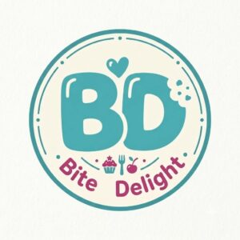

01

Bite Delight Restaurant Website
A one-page restaurant website designed to present Bite Delight’s information and menu content in a clear and engaging way.
Project highlights
- Restaurant information and menu presentation
- Local and continental meal sections
- Desserts and snacks
- Services and delivery information
- Opening hours
- Customer testimonials
- Responsive layout and navigation
- Secure HTTPS access
02
Grove Finance
A personal finance tracking web application designed to help users organise their finances, monitor their spending, and understand their overall financial position.
Project highlights
- Financial dashboard with balance, income, expenses, and savings rate
- Transaction tracking and spending categories
- Budget and savings goal tracking
- Emergency fund tracking
- Net worth monitoring
- Recurring transactions and bills and subscriptions
- Financial calendar, reports, and insights